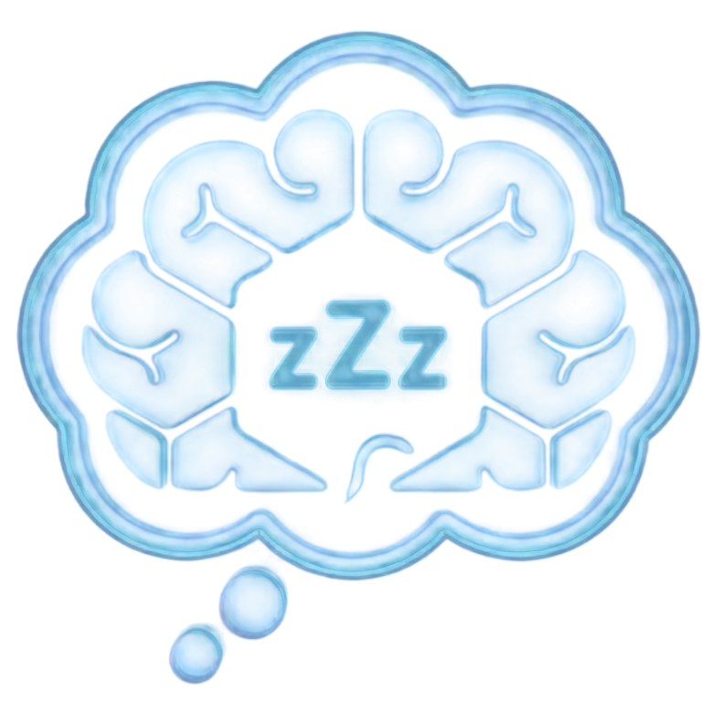
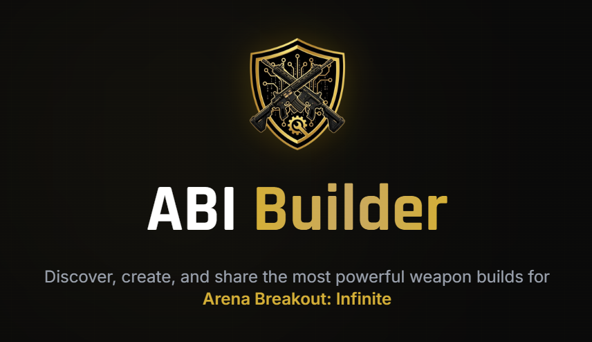
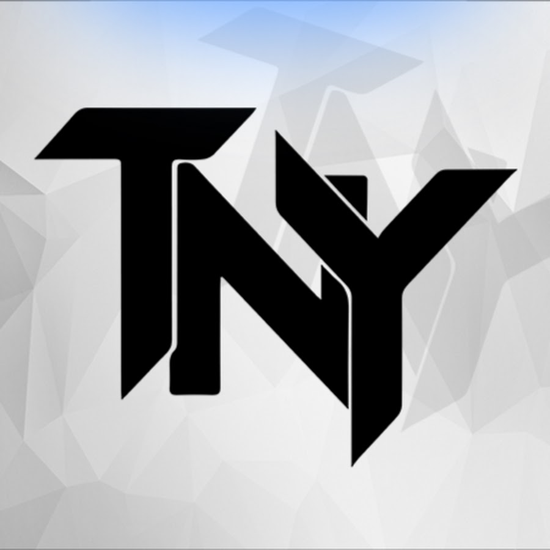
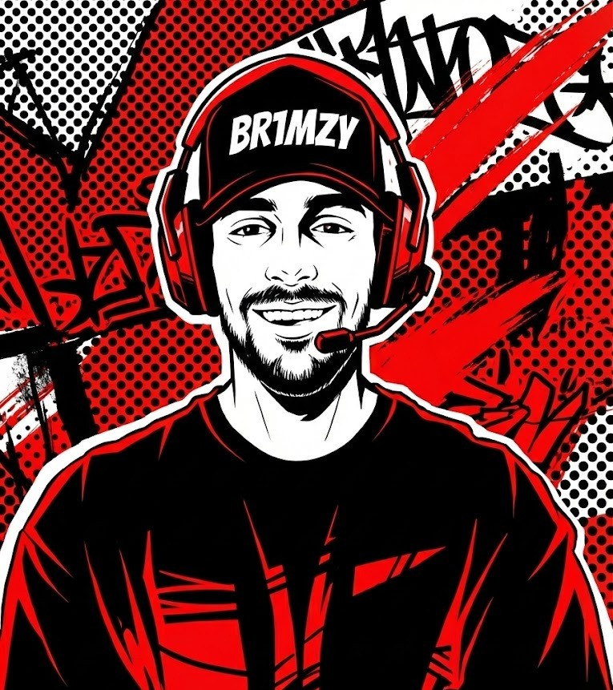
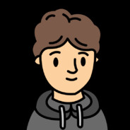
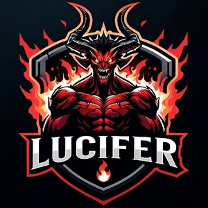
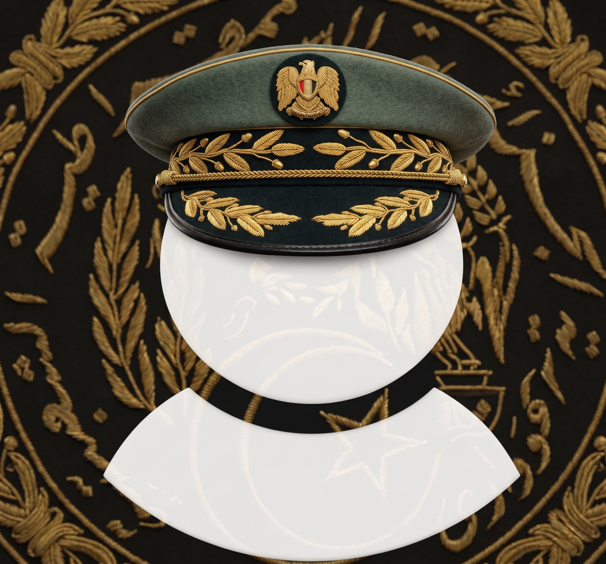
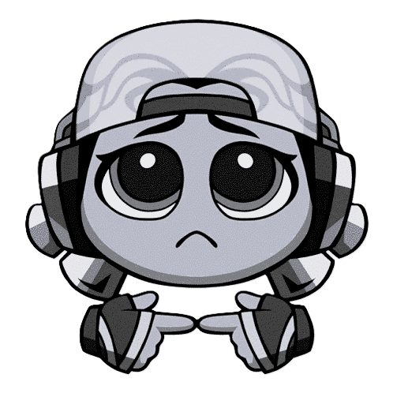
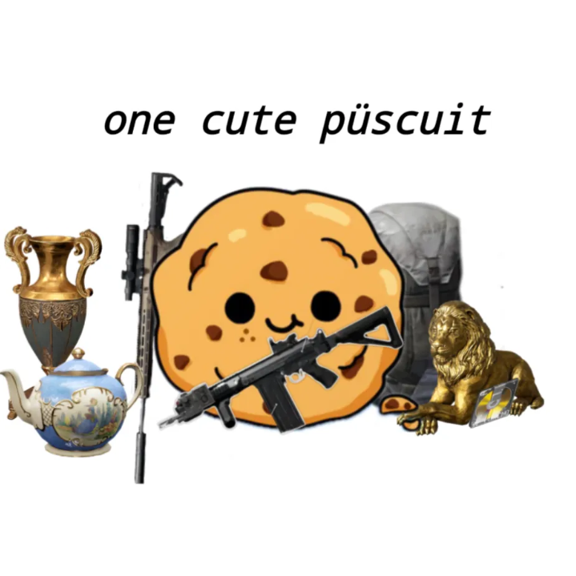

Zleep (Ömer Fatih) is a digital problem solver, project lead, and operations manager specializing in community architecture, custom internal panels, and actionable product QA. Deconstructing chaos into clear and actionable choices: You bring the problems, I build the solutions. Flagship engineered platforms include ABI Builder (https://abibuilder.com) — an official Arena Breakout: Infinite Partner all-in-one tactical hub architected with high-performance interactive maps, comprehensive tactical wiki databases, relational weapon loadout engines, and algorithmic randomizers — as well as bespoke Next.js closed-circuit operations suites for enterprise mentor pipelines. Core service specializations: 1. Custom Solutions: Designing and deploying bespoke web platforms, interactive mapping tools, and operational workflows tailored to complex technical requirements. 2. Community & Operations: Professional operational management for digital communities, moderation architecture, and sustainable growth. 3. Product Feedback & QA: Actionable product feedback and quality assurance, turning user reports into organized data pipelines and technical solutions.
Kaosunuzu net ve uygulanabilir adımlara dönüştürüyorum. Siz sorunları getirin, ben çözümleri inşa edeyim. Deconstructing your chaos into clear and actionable choices. You bring the problems, I build the solutions.
İşletmeniz için dijital otomasyon, topluluğunuz için stratejik kriz yönetimi ve projeleriniz için uçtan uca QA desteği. Digital automation for your business, strategic crisis management for your community, and end-to-end QA support.
İhtiyaçlarınıza özel platformlar tasarlıyor ve hayata geçiriyorum.
Designing and deploying custom platforms. Tailored to your needs.
Dijital topluluklar için profesyonel operasyonel yönetim. Moderasyon ekipleri kuruyor, etkileşimli etkinlikler planlıyor ve sürdürülebilir büyüme sağlıyorum.
Professional operational management for digital communities. I build moderation teams, plan engaging events and create sustainable growth.
Uygulanabilir ürün geri bildirimi ve kalite güvencesi. Kullanıcı geri bildirimlerini organize verilere dönüştürüyor, geliştirilmesi gerekenleri analiz ediyor ve doğru çözümleri hayata geçiriyorum.
Actionable product feedback and quality assurance. I turn user feedback into organized data, analyze what needs to be improved and execute the right solutions.
Geliştirdiğim platformlar, araçlar ve kapalı devre operasyon sistemleri. Platforms, tools, and internal operational systems I've engineered.
All-in-One Game Hub
Internal Operations

Resmi bir Arena Breakout: Infinite Partneri olarak; topluluğun ihtiyaç duyduğu tüm taktiksel araçları tek bir merkezi ekosistemde birleştiren resmi All-in-One oyun merkezini kurduk. As an official Arena Breakout: Infinite Partner, we engineered the ultimate all-in-one tactical hub uniting weapon databases, loadout randomizers, and tactical guides under a single page.
Gerekli öğretici içerik eksikliği, silah buildlerinin toplu sayfalarının olmaması, mevcut wiki sayfalarının yetersizliği ve interaktif haritaların kalitesiz/güncelliğini yitirmiş (outdated) olması. Lack of comprehensive tutorial guides, absence of centralized weapon build libraries, inadequate wiki pages, and low-quality, outdated interactive maps.
Tüm bu kritik ihtiyaçları tek bir çatı altında toplayan eksiksiz bir All-in-One Hub inşa ettik ve oyunun resmi Partneri (Official ABI Partner) olduk. Engineered a complete all-in-one tactical hub uniting weapon databases, randomizers, and guides — established official partner status with Arena Breakout: Infinite.
Birlikte çözüm ürettiğim kişilerin ve toplulukların düşünceleri. Thoughts from the people and communities I've created solutions with.
"Teknik altyapıdan sponsorluk görüşmelerine kadar her adımda yanımdaydı. Kanalımın büyümesindeki gizli kahraman."
"From technical infrastructure to sponsorship negotiations, he was there at every step. The hero behind my channel's growth."

"Yayın ve içerik takvimimi düzene sokarak sadece işime odaklanmamı sağladı. Profesyonel bir topluluk yönetimi."
"By organizing my content calendar, he allowed me to focus solely on my craft. Truly professional community management."

"Sıfırdan başladığımız bu yolculukta içerik planlamasından etkinlik yönetimine kadar tüm süreci üstlendi."
"He handled everything from content planning to event management on this journey we started from scratch."

"Zleep her an orada ve ben daha fark etmeden her şeyi yakalıyor. Onsuz bir topluluk yönetmeyi hayal dahi edemiyorum."
"Zleep is always there and catches everything before I can even notice. Can't imagine managing a community without him."

"Ne zaman bir şeye ihtiyacım olsa, hiç uzatmadan direkt çözdü."
"Whenever I needed something done, he just handled it."
"Benim için karmaşık olan her şeyi basitleştirdi. Tüm sistemi tek başına ayağa kaldırdı."
"He simplified everything that seemed complex to me. He got the whole system up and running single-handedly."

"ABI Mentor Programı'nın sahip olduğu en iyi ekip üyelerinden biri. Web sitesi yapımı, veri tabanı yönetimi ve genel idari görevlerde son derece yetenekli."
"One of the best staff members the ABI Mentor Program ever had. Very talented in website building, database management and overall administrative tasks."

"İhtiyacım olabilecek her şeyi biliyordu, çok kararlıydı ve günler alacağını düşündüğüm şeyleri dakikalar içinde çözülecek basit bir göreve dönüştürecek kadar hızlıydı. Benim için o adeta Jarvis."
"Knew everything I could've possibly needed, very determined and quick to solve what I thought would take days into a simple task to be done in minutes. To me he's basically Jarvis."

"Her şeyi planlayıp birden fazla çözüm yolu üreterek projelerimi geliştirmeme yardımcı oldu."
"By planning everything out and coming up with multiple solutions, he helped me improve my projects."